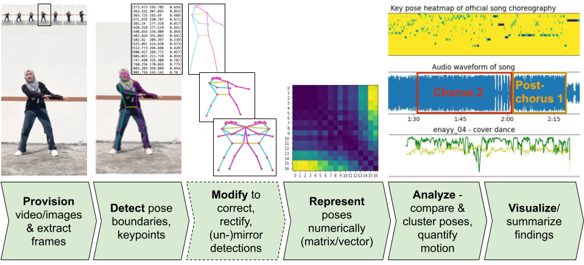

choreo_k

Cite
This repository contains code and data used in the paper Comparative K-Pop Choreography Analysis through Deep-Learning Pose Estimation across A Large Video Corpus:
@article{btdhq2021151,
author = {Peter Broadwell and Timothy R. Tangherlini},
title = {Comparative K-Pop Choreography Analysis through Deep-Learning Pose Estimation across A Large Video Corpus},
journal = {Digital Humanities Quarterly},
volume = {15},
number = {1},
year = 2021
}Try
The full Python code package documented here is still under development. To try out the pose analysis code in the meantime, we recommend opening the notebook Pose_analysis_examples.ipynb in Google Colab:

Documentation
Details of the specific functions of each module are available via the project documentation site.
Generally, though, choreo_k is intended to provide the pose analysis pipeline routine illustrated in the following figure, in which each step of the routine can be implemented in one or more different ways, but each implementation provides roughly equivalent functionality. For example, different third-party pose detection libraries may be used to generate pose data, which then can be modified, represented, analyzed and visualized by any modules that support a specific library’s pose data output format.
